SOLVING THE RUBIK'S CUBE IN 7 STEPS
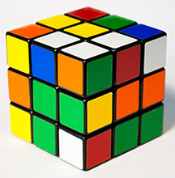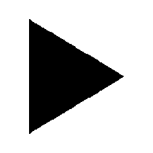
 Though it seems that Rubik's Cubes are hard to solve, they are accually not that bad once you learn how to solve them. You probably don't believe me when I say that, but after you learn how, it's not that hard. I'm not saying you will get it instantly. You will have to practice doing the moves and it does take time to understand the instuctions. But once you do, you'll be able to solve it any time you want.
www.coolmath-games.com (This link will take you to an online Rubik's Cube)
Return to home page.
Though it seems that Rubik's Cubes are hard to solve, they are accually not that bad once you learn how to solve them. You probably don't believe me when I say that, but after you learn how, it's not that hard. I'm not saying you will get it instantly. You will have to practice doing the moves and it does take time to understand the instuctions. But once you do, you'll be able to solve it any time you want.
www.coolmath-games.com (This link will take you to an online Rubik's Cube)
Return to home page.
STEPS
- SOLVING THE BOTTOM 4 EDGES
- SOLVING THE BOTTOM 4 CORNERS
- SOLVING THE MIDDLE EDGES
- GETTING THE TOP FOUR EDGES FACE UP
- GETTING THE TOP FOUR CORNERS FACE UP
- SOLVING TOP FOUR CORNERS
- SOLVING THE LAST EDGES
UNDERSTANDING THE INSTRUCTIONS
In order to read the instructions given, use the chart given below. 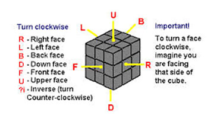 In the instructions above, each face is assigned a letter. Each letter given in a sequence means that you turn that face clockwise a quarter of the way around. Whenever you see a lowercase "i" next to a letter, that means you would turn that face counter clockwise. Two of the same letters next to each other means that you would turn a face half way around. For example, the sequence, F Ri D D, would mean that you would turn the front face 90 degrees clockwise, then the right face 90 degrees clockwise, then the down face 180 degrees clockwise. In the instructions below, there will be diagrams above each letter to help know which way to turn. Each of the steps will focus on solving specific sections of the cube. In order to solve the entire cube, you need to solve each section COMPLETELY before going on to the next one. In each step, sequences will given to demonstrate the moves you will have to preform. The sequences may have to be done more than once starting at different front faces in order to complete a certain step. Before you start solving your cube, are still two more things you need to know. The first thing you need to know is that on Rubik's Cubes, the centers never move. They will always stay in their same location no matter what. The second thing you have to know is that in the pictures displayed below, there will be tiles that are colored gray. This is because those pieces are ignored in that specific step. Return to Top.Step 1: SOLVING THE BOTTOM 4 EDGES
In the first step, you will be solving the first four edges of the cube. First, pick a side you want to start from. In the diagram below, I will be starting on the red face. You will have to figure out this step out on your own. Though this may sound hard, this is actually one of the easiest steps in my opinion. Just remember that when you solve each edge, ignore all of the other pieces except for the four edges you are working with. You will get to the other pieces later. Also, focus on solving each edge one at a time and try to avoid disrupting the other edges as much as possible. The sequence below will help you if you ever have an edge in the right place, but flipped. IMPORTANT: In order to solve each edge on this step, make sure the edge matches the top color AS WELL AS its other color on the side. For example, the red and yellow edge would have to be lined up with both the red and yellow centers to be completely solved. 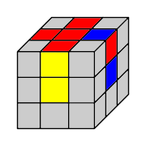


 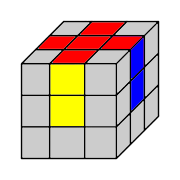
Return to Top.
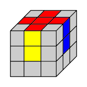
Return to Top.
Step 2: SOLVING THE BOTTOM 4 CORNERS
Now that your first four sides are solved, now you will be solving your top four corners. The moves below outline certain scenarios you may run into. Before starting each move orientate your cube to match the starting image. Then follow the sequence given. You may have to rotate the bottom face to orientate the corners where they need to go. Complete all four corners before moving on to Step 3. IMPORTANT: In order for a corner to fit, all of its colors have to match up with the edges on either side of it. What if I have a corner in the right place but rotated wrong?Replace it with another corner to get it on the bottom. It doesn't matter which corner you replace it with.


or
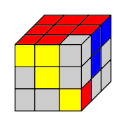

or
 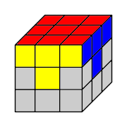
Return to Top.
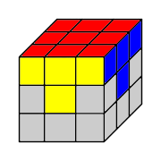
Return to Top.Now that your bottom face is solved, flip cube over so that the solved side is your bottom face. Your cube will be orientated like this for the remaining steps.
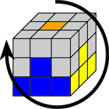Step 3: SOLVING THE MIDDLE EDGES
For this step, you will be solving the middle edges on your cube. In order to do this, find an edge on the top layer that needs to go in the middle layer and find where it needs to go. For example, if you were solving the yellow and blue edge, it would go in between the blue and yellow centers. Then orientate your cube like one of the starting sequences below, then do that sequence. HINT: If one of the edges is the color of the top center, it does not belong in the middle layer. What if I have an edge in the right place but flipped?Replace the flipped edge with a different one. It does not matter which one you replace it with.

or
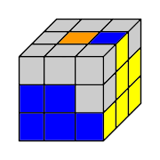
 Return to Top.
Return to Top.
Step 4: GETTING THE TOP FOUR EDGES FACE UP
Now you have solved the first two layers, you will be mainly focusing on the top face. In this step, you will be getting all the top edges face up. If your cube's edges are all face up, skip this step and go on to the next one. If you have no edges face up, do the sequence below and your edges will form an arrow. Reorientate your cube to match the arrow cube on the example, then do the sequence below it. Afterword, your edges will form a line. Do the sequence below the line image and all your edges will be solved. It is possible that you are already in the middle of this process. 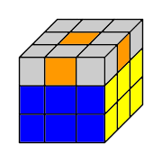
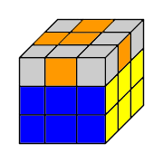
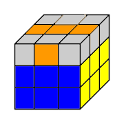
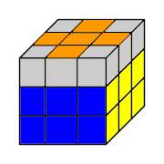
Return to Top.
Step 5: GETTING THE TOP FOUR CORNERS FACE UP
In this step, you will be getting all of your corners face up. If all of your corners are already face up, skip this step and go on to the next one. If the top of your cube looks like a castle, go down to the castle move section. If the top of your cube looks like a fish, go down to the fish move section. What if the top of my cube looks like a cross?Do either a random fish move or a random castle move. It does not matter which one or where you start the move. You may have to do this more than once.
CASTLE MOVE
If you have a castle, there are two possibilities. You either have an inward facing castle (unsolved edges are both facing the same direction) or an outward facing castle (unsolved edges are both facing opposite directions). If you have an inward facing castle, follow the sequence below the first castle. If you have an outward facing castle, follow the sequence below the second castle. At the end, your top face should look like a fish. 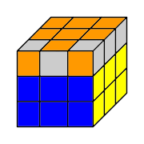


or
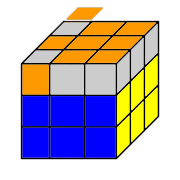
FISH MOVE
In order to solve a fish move, first you have to find the fish's eye. The fish's eye is an unsolved corner that has it's top facing the same way as the fish. 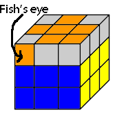 If your fish's eye is on the right, use the sequence below the first diagram. If your fish's eye is on the left, use the sequence below the second diagram. Afterward, all of your corners should be face up. What if I have a double-headed fish?If you have a fish with two heads, then one of the heads should have two eyes. Start a fish move from one of the eyes and at the end, you should have a castle. 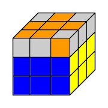
or
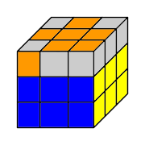
Return to Top.
Step 6: SOLVING TOP FOUR CORNERS
Now that all of your top pieces are faced toward the top, now we will focus on orientating the corners correctly. First, turn the top side of your cube until your corners match up with the middle layer. If all four corners match up, skip this step and go on to the next one. If only two of your corners can be lined up with the middle layer at the most, your top face either has a Plus Minus Plus Minus pattern (solved edges are adjacent to each other), or a have a Plus Plus Minus Minus pattern (solved corners are on the same side as each other). Go to the example below that best fits your cube.PLUS MINUS PLUS MINUS PATERN
If you have this pattern, do a random castle move. It does not matter where you start. Afterward, you will have fish. Solve the fish using a fish move and you will have a Plus Plus Minus Minus pattern. 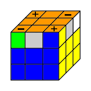PLUS PLUS MINUS MINUS PATERN
If you have this pattern, first, orientate your cube to match the diagram below so that the plus corners are on the right and the negative corners are on the left. Starting on the right side, do a castle move. Afterward, you will have fish. Solve the fish using a fish move and all of your corners will be orientated correctly. 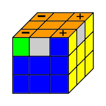 Return to Top.Step 7: SOLVING THE LAST EDGES
Now you are at the final step of solving your cube. Your cube should look solved except for the last few edges out of place forming castles on the sides of your cube. If your cube is completely solved at this point, congratulations. If you have three castles, orientate your cube so that the middle castles is the front one. Then, look at the unsolved pieces to see where they need to be. They will either need to be switched clockwise or counterclockwise. If your pieces need to be switched clockwise, do a fish move starting at the right face. If your pieces need need to be switched counterclockwise, do vise versa, starting at the left face. Afterward, your top face should look like a fish. Solve the fish using a fish move and your cube should be completely solved. If you have four castles, do a random fish move. It does not matter where you start. Afterward you should have a fish. Solve the fish with a fish move and you should have three castles.Clockwise
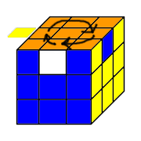or
Counterclockwise
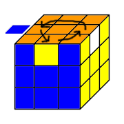 Return to Top.CONGRATULATIONS
Congratulations, you have successfully solved a Rubik's cube! If you wish, you can go back to my homepage and explore my other sites. Return to Top.
Return to Top.
Return to home page.